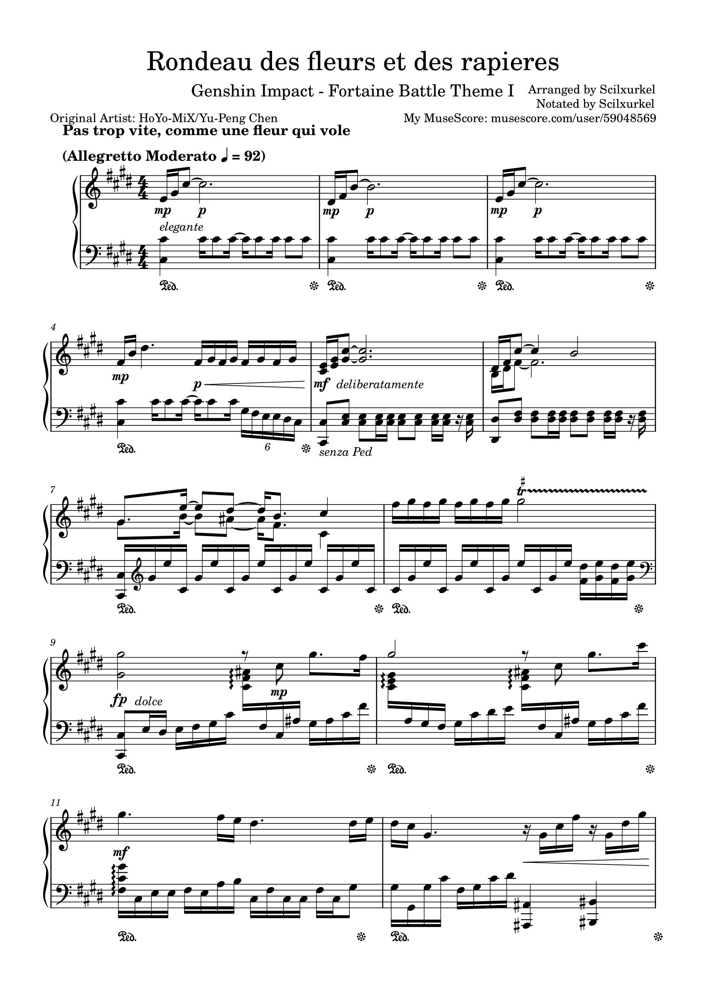

Our pages are under development, now the features are not full commited.
We will improve this later.
Created in Sep 12, 2023. Last edited in Sep 12, 2023
Introduction:
Hello Fontaine!
It took me nearly 4 weeks to make it and I used all pages of my music notebook. Transcribing to MuseScore is also difficult, but i am fine. Yes, I'm fine when I finally made it.
Althrough it's difficult to notate, I still provide it for FREE.
Note:
You need MuseScore 4 to open the MSCZ file. If you are using MuseScore 3.6 or other notation software, MusicXML will be more suitable.
Preview:
